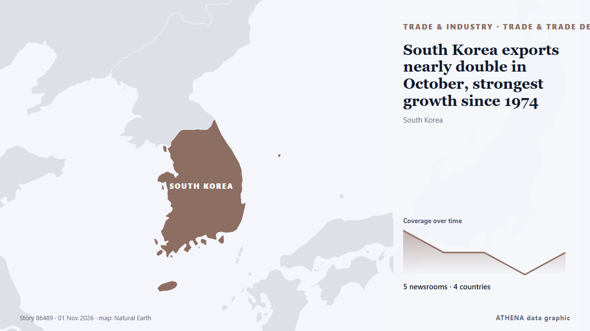

التجارة والصناعة والبنية التحتية
تُعرض العناوين بالإنجليزية كما نُشرت.

التجارة والاتفاقياتSouth Korea exports nearly double in October, strongest growth since 1974
SEOUL: South Korea's exports nearly doubled in October from a year earlier, beating market expectations and marking the sharpest increase in more than 50 years, trade data showed on Sunday. من New Straits Times
| 19 أكتوبر | 58 |
|---|---|
| 20 أكتوبر | 28 |
| 21 أكتوبر | 40 |
| 22 أكتوبر | 96 |
| 23 أكتوبر | 73 |
| 24 أكتوبر | 41 |
| 25 أكتوبر | 57 |
| 26 أكتوبر | 115 |
| 27 أكتوبر | 103 |
| 28 أكتوبر | 90 |
| 29 أكتوبر | 91 |
| 30 أكتوبر | 91 |
| 31 أكتوبر | 28 |
| 1 نوفمبر | 22 |
Iran submits evidence of US-Israeli attacks on ports, maritime infrastructure to IMO
London, IRNA — Iran has submitted documents and photographic evidence of US and Israeli attacks on the country’s ports, civilian vessels, and maritime infrastructure to the International Maritime… من IRNA (English)
Russian attacks leave over 350,000 without power in Dnipro and surrounding area
More than 350,000 consumers in Dnipro and surrounding settlements have been left without electricity following Russian attacks. من Ukrinform (English)
In Lebanese village near Israeli troops, farmers brave danger to harvest their olives
ZIBQIN, Lebanon Oct 29 - In a field overlooking a lush valley in southern Lebanon, residents of the village of Zibqin balanced on branches picking their olives while Lebanese Army soldiers stood… من The Straits Times
UN demands investigation after death of staff member held in Houthi custody
The UN human rights chief on Saturday demanded an independent investigation into the death of a Yemeni colleague held by the Houthis for more than two years, whose family learned of his death only… من UN News
Russia extends diesel export ban until January
The Russian government extended on Saturday a temporary ban on diesel fuel exports until the end of January 2027, following a previous announcement by Russian Deputy Prime Minister Alexander Novak. من AzerNews
South Africa braces for AGOA review amid US trade talks
South Africa is preparing for possible changes to its eligibility under the African Growth and Opportunity Act (AGOA), while keeping trade negotiations with the United States ongoing, Foreign… من CGTN (World)
Ryanair responds to Kumar Sangakkara’s allegation
Ryanair has responded to Sri Lankan cricket legend Kumar Sangakkara, who accused the airline, following an incident involving the airline’s gate staff at Dublin Airport. من Daily Mirror
Malaysia Airlines says customers may be affected by Amadeus breach
The incident may have affected information processed between August 2023 and September 2026, the airline said on Sunday (Nov 1). من CNA (Channel NewsAsia)
Attacks on ships transiting Hormuz in October highest since start of war
Attacks on commercial vessels in and around the Strait of Hormuz reached their highest monthly level in the Iran-US war in October, with more than 30 incidents reported, according to the UK Maritime… من The National
Natalia Margioli Breaks a 115-Year Barrier at Shipbrokers’ Institute
Natalia Margioli has become the first woman and first Greek to serve as president of the Institute of Chartered Shipbrokers in 115 years. من Greek City Times
South Korean Group Wins Its First US Navy Medium Landing Ship Contract After Buying A Philadelphia Shipyard In 2024
TOTE Services, LLC, a leading U.S. maritime services company specializing in vessel construction management and ship management announced its first shipyard selection for the Medium Landing Ship… من Marine Insight
Greek PM: Turkey-Libya Maritime Agreement Illegal and Invalid
Kyriakos Mitsotakis calls the Turkey-Libya maritime agreement illegal, urges respect for international law and stronger European engagement in the Gulf. من Greek City Times
Expect Gusts Up to 85 km/h and Rain in Costa Rica This Weekend
Gusts could reach 85 km/h in Costa Rica's mountains and northern Guanacaste today, with rain in the Caribbean and storms in the South Pacific. من The Tico Times
Iranian Army: Offending tanker catches fire after striking mines east of Hormuz
Tehran, IRNA — Iran’s Army Navy says another oil tanker caught fire after striking naval mines while sailing through an unauthorized and unsafe area east of the Strait of Hormuz. من IRNA (English)
Iranian Navy reports tanker fire in Hormuz
Coalition says it destroyed two ballistic missile launchers The Coalition has released footage it says shows the targeting and destruction of two ballistic missile launch platforms. من Gulf News
Tinubu arrives in Saudi Arabia for Umrah
Before leaving, President Tinubu is expected to inaugurate some equipment acquired by the Nigerian Air Force for its operations. من Channels TV
Iran Guards Say Halted 3 Tankers After 'Incidents' In Strait Of Hormuz
The Iran Guards did not specify the nature of the incidents, which came a day after Iran's armed forces said at least four tankers had stopped in the area after hitting mines. من NDTV
Letter from China: The one-person company, the port and the shopping bag, snapshots from Hainan FTP
The province’s services exports increased to around $6.02 billion in the reporting period. من TASS (English)
Panama Canal expands shipping capacity
The Panama Canal recorded increased shipping traffic, cargo volumes and revenue in 2026, despite concerns over water shortages linked to El Niño. من The Portugal News
Iran Says Four Tankers Hit Mines in Hormuz as US Insists Shipping Lanes Are Clear
Iran says four oil tankers caught fire after striking mines in the Strait of Hormuz, a claim that directly challenges US assurances that the main shipping lanes through the waterway have been cleared. من Greek City Times
Tanker carrying 27 Indians struck by limpet mines in Strait of Hormuz; minister says all seafarers safe
The incident took place on Thursday, 25 nautical miles (46 km) northeast of Oman's Khasab, British navy agency United Kingdom Maritime Trade Operations said. من Hindustan Times
Trump declares robot imports a national security threat
President orders trade talks on foreign-made factory robots, threatens tariffs. من Ars Technica
Call of Duty publisher apologizes for using real footage of Itaewon crowd crush
SEOUL, Oct. 30 (Yonhap) -- The makers behind the Call of Duty video game apologi... من Yonhap (English)
Oman rescues 25 from burning ship, Iran halts tankers
Oman’s navy evacuated the crew members from the Panamanian-flagged merchant ship RITI after it was attacked and caught fire. من Free Malaysia Today
Pres. Pezeshkian condoles Spain over deadly train collision
Emergency services combed through the wreckage at night to find further victims. من The Straits Times
More on tanker set ablaze in Hormuz Strait
KUWAIT CITY, Oct 23: A tanker reported being struck by an unknown projectile while sailing outbound through the Strait of Hormuz, about seven nautical miles northeast of Limah, Oma... من Arab Times
Explosion hits munitions factory in southern Spain: reports
Three employees were injured in an explosion at a factory in the Meepe area of Padukka today (30), police said. من Daily Mirror
Aggressors bear responsibility for disruption in Persian Gulf, Strait of Hormuz: Iran envoy
New York, IRNA – Iran’s Ambassador and Chargé d’Affaires to the United Nations in New York Gholamhossein Darzi has said aggressors bear direct responsibility for any disruption, obstruction or… من IRNA (English)
Int’l conference on “New World Order” opens in Cambodia to debate geopolitics, tech and trade
An international conference on the "New World Order" convened here in the Cambodian capital yesterday, fostering critical discussions on global geopolitics, regional cooperation, digital technology… من Khmer Times
Braw in The Sun on potential attacks on undersea infrastructure
On October 17, Elisabeth Braw was interviewed in The Sun to discuss the threat of attacks on undersea cables and pipelines. من Atlantic Council
FedEx Freight sees volumes stabilize, eyes Q4 margin improvement
FedEx Freight reported Thursday that volumes continue to stabilize, and it anticipates stronger operating leverage next year, bolstered by business wins and an improved freight mix from its dedicated… من FreightWaves
US orders non-emergency staff to leave Saudi Arabia over security risks
Oct 30 (Reuters) - The United States ordered non-emergency government employees and their family members to leave Saudi Arabia effective October 23 due to safety risks, the US embassy in Riyadh said… من Al-Monitor
Feds tap Delta, B.C., port expansion as 'project of national interest'
The federal government has listed Roberts Bank Terminal 2 in Delta, B.C., as a "project of national interest" to expand and diversify Canada's trade capacity. من CBC News (alternative feed)
Uzbekistan–Türkiye Trade Agreement to Cover More Products
Uzbekistan and Türkiye have agreed to expand the list of goods eligible for preferential trade treatment and signed agreements on. من The Times of Central Asia